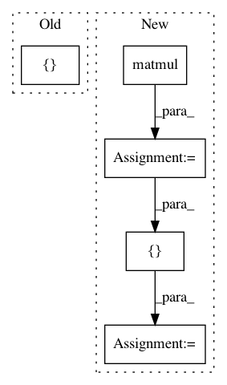

bc1c7d9d329d8f67fd95ce94bac71ce3fca3ca45,ops_test.py,TTMatrixTest,testTTMatTimesTTMat,#TTMatrixTest#,157
Before Change
res_actual = ops.tt_tt_matmul(tt_mat_1, tt_mat_2)
res_actual = ops.full(res_actual)
res_desired = tf.matmul(ops.full(tt_mat_1), ops.full(tt_mat_2))
res_actual_val, res_desired_val = sess.run([res_actual, res_desired])
// TODO: why so bad accuracy?
self.assertAllClose(res_actual_val, res_desired_val, atol=1e-4, rtol=1e-4)
After Change
tt_mat_2 = initializers.random_matrix((sum_shape, right_shape))
res_actual = ops.tt_tt_matmul(tt_mat_1, tt_mat_2)
res_actual = ops.full(res_actual)
res_actual2 = ops.matmul(tt_mat_1, tt_mat_2)
res_actual2 = ops.full(res_actual2)
res_desired = tf.matmul(ops.full(tt_mat_1), ops.full(tt_mat_2))
to_run = [res_actual, res_actual2, res_desired]
res_actual_val, res_actual2_val, res_desired_val = sess.run(to_run)
// TODO: why so bad accuracy?
self.assertAllClose(res_actual_val, res_desired_val, atol=1e-4, rtol=1e-4)
self.assertAllClose(res_actual2_val, res_desired_val, atol=1e-4, rtol=1e-4)
In pattern: SUPERPATTERN
Frequency: 3
Non-data size: 5
Instances
Project Name: Bihaqo/t3f
Commit Name: bc1c7d9d329d8f67fd95ce94bac71ce3fca3ca45
Time: 2017-03-02
Author: novikov@bayesgroup.ru
File Name: ops_test.py
Class Name: TTMatrixTest
Method Name: testTTMatTimesTTMat
Project Name: Bihaqo/t3f
Commit Name: bc1c7d9d329d8f67fd95ce94bac71ce3fca3ca45
Time: 2017-03-02
Author: novikov@bayesgroup.ru
File Name: ops_test.py
Class Name: TTMatrixTest
Method Name: testTTMatTimesDenseVec
Project Name: Bihaqo/t3f
Commit Name: bc1c7d9d329d8f67fd95ce94bac71ce3fca3ca45
Time: 2017-03-02
Author: novikov@bayesgroup.ru
File Name: ops_test.py
Class Name: TTMatrixTest
Method Name: testDenseMatTimesTTVec